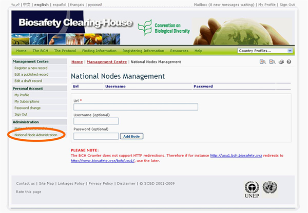

The link National Node Administration provides access to a page that can be used to request interoperability between the national nodes of the BCH and the Central Portal of the BCH.

Interoperability refers to the sharing of data between a country’s national BCH and the BCH Central Portal maintained by the Secretariat. Information that is registered in the BCH can automatically appear in a country’s national BCH by using either Hermes or the Ajax Plug-In. Governmental agencies or organizations managing information on their own servers may also wish to explore the possibility of making their servers interoperable with the BCH by exchanging data in XML format. National Focal Points or IT administrators who are interested in this option may contact the Secretariat for further information.
For more information please contact the Secretariat.